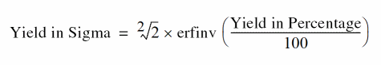

Yield View of the Scaled-Sigma Sampling Method
After the Monte Carlo run for the Scaled-Sigma Sampling method completes, the Yield view of the Results tab shows the yield estimation.
The following table describes the information displayed in different columns of the Results tab.
| Column | Description |
|---|---|
|
The yield value in sigma. This value is calculated using the following formula:

where,
If the yield in sigma is greater than |
|
|
Displays the yield value in percentage. This value is calculated using the following formula: The yield in percentage value is displayed with 10 digits by default. To change the number of digits to be displayed for this value, set the value of the digitsToShowForYieldInPercentage environment variable. You can display a maximum of 53 digits for these values. |
|
Related Topics
The Scaled-Sigma Sampling Method
Running the Scaled-Sigma Sampling Method
Return to top